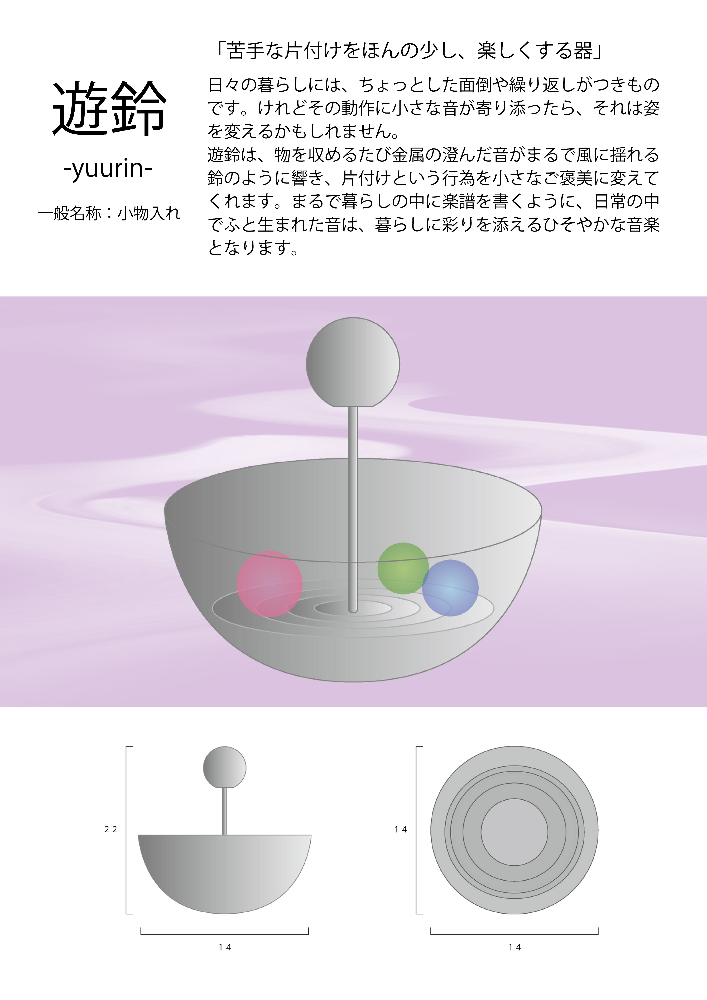

「遊鈴」
KOKUYO DESIGN AWARD2026 プロダクトデザイン

Overview
- 課題制作 制作全般
- 制作時期：2025年 9月
- 使用ツール：Illustrator Canva
Concept
本作は、「片付け」という日常の中でも敬遠されがちな行為に、音という要素を重ねることで、新たな価値を見出すプロダクトの提案です。 物を収めるたびに響く小さな音は、作業の終わりを告げる合図であり、同時に行為そのものを肯定する存在です。 静かに揺れる音は、時間を区切り、暮らしの中に余白を生み出します。 遊鈴は、動作の積み重ねによって生まれる「暮らしのリズム」を可視化し、片付けという行為を小さな楽しみに変えてくれます。 本作を通して、日常の繰り返しの中に潜む心地よい変化を感じてもらえることを願っています。